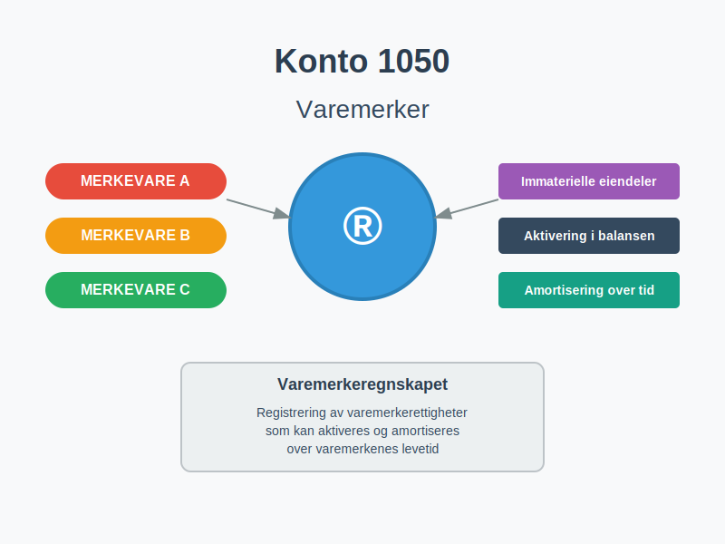
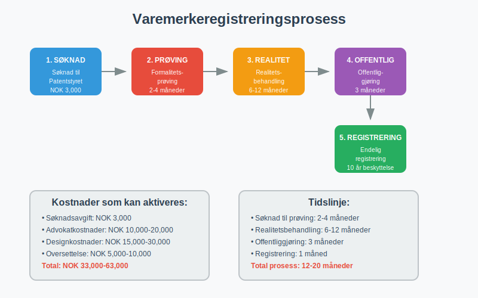
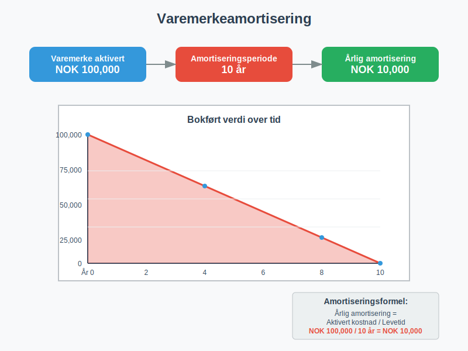
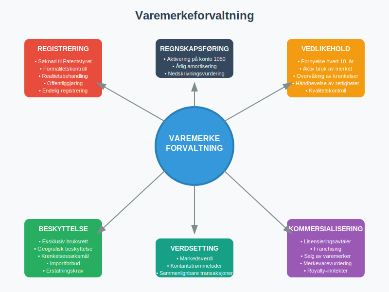

Konto 1050 - Varemerker er en sentral konto i norsk kontoplan som anvendes for å registrere immaterielle eiendeler knyttet til varemerkerettigheter. Denne kontoen brukes når virksomheter erverver eller utvikler varemerker som kan aktiveres i balansen og amortiseres over varemerkenes levetid.

Hva er varemerker?
Et varemerke er et beskyttet tegn som identifiserer og skiller en virksomhets varer eller tjenester fra andre aktører i markedet. Varemerker kan bestå av:
- Ordmerker - tekst, ord eller navn
- Figurmerker - logoer, symboler og grafiske elementer
- Kombinerte merker - kombinasjon av tekst og figurer
- Formmerker - spesielle former eller design
- Fargmerker - beskyttede fargekombinasjoner
- Lydmerker - karakteristiske lyder eller melodier
Varemerketyper i norsk næringsliv
| Varemerketype | Beskyttelsesperiode | Fornyelsesmulighet |
|---|---|---|
| Nasjonalt varemerke | 10 år | Ubegrenset fornyelse |
| EU-varemerke | 10 år | Ubegrenset fornyelse |
| Internasjonalt varemerke | 10 år | Ubegrenset fornyelse |
| Fellesvaremerker | 10 år | Ubegrenset fornyelse |
| Kollektivmerker | 10 år | Ubegrenset fornyelse |

Kriterier for aktivering av varemerker
For at varemerker kan aktiveres på konto 1050, må de oppfylle spesifikke kriterier:
1. Kontrollerbar ressurs
Virksomheten må ha juridisk kontroll over varemerkerettigheten gjennom:
- Registrert varemerke med eksklusiv bruksrett
- Overdragbar eller lisensierbar rettighet
- Juridisk håndhevbare rettigheter
- Klar eiendomsrett til varemerket
2. Fremtidige økonomiske fordeler
Varemerket må kunne generere påviselige økonomiske fordeler gjennom:
- Merkevarebeskyttelse og markedsposisjon
- Kundegjenkjenning og lojalitet
- Prispremium og markedsfordeler
- Lisensieringsmuligheter til tredjeparter
3. Pålitelig kostnadsmåling
Anskaffelseskostnaden må kunne måles pålitelig og inkludere:
- Registreringsgebyrer og søknadsavgifter
- Advokatkostnader og juridiske tjenester
- Designkostnader og merkeutvikling
- Oversettelses- og dokumentasjonskostnader
Regnskapsføring av varemerker
Anskaffelse av varemerker
Når varemerker anskaffes, registreres disse kostnadene:
| Kostnadskategori | Konto 1050 | Eksempel |
|---|---|---|
| Registreringsgebyrer | ✓ | NOK 3,000 |
| Advokatkostnader | ✓ | NOK 15,000 |
| Designkostnader | ✓ | NOK 25,000 |
| Oversettelseskostnader | ✓ | NOK 5,000 |
| Søknadsavgifter | ✓ | NOK 4,000 |
| Vedlikeholdskostnader | ✗ | Kostnadsføres |
Internt utviklede varemerker
For internt utviklede varemerker kan disse kostnadene aktiveres:
- Designkostnader og merkeutvikling
- Markedsundersøkelser og konsepttesting
- Juridiske kostnader for registrering
- Dokumentasjon og søknadsprosess

Amortisering av varemerker
Amortiseringsperiode
Varemerker amortiseres over deres økonomiske levetid, som vanligvis er:
- Maksimum 20 år som hovedregel
- Kortere periode hvis økonomisk levetid er begrenset
- Fleksibel vurdering basert på markedsforhold
Amortiseringsmetoder
Lineær amortisering er den vanligste metoden:
Årlig amortisering = Aktivert kostnad / Amortiseringsperiode
Eksempel på amortisering:
- Aktivert varemerkekostnad: NOK 100,000
- Amortiseringsperiode: 10 år
- Årlig amortisering: NOK 10,000
Verdifall og nedskrivning
Varemerker må vurderes for verdifall årlig:
- Nedskrivningstest ved indikasjoner på verdifall
- Markedsverdi kontra bokført verdi
- Fremtidige kontantstrømmer fra varemerket
- Konkurransesituasjon og markedsutvikling
Praktiske eksempler
Eksempel 1: Registrering av nytt varemerke
Et selskap registrerer et nytt varemerke med følgende kostnader:
| Kostnad | Beløp |
|---|---|
| Registreringsgebyr | NOK 3,000 |
| Advokatkostnader | NOK 12,000 |
| Designkostnader | NOK 20,000 |
| Total anskaffelseskost | NOK 35,000 |
Regnskapsføring:
- Debit: Konto 1050 Varemerker NOK 35,000
- Kredit: Konto 1900 Leverandørgjeld NOK 35,000
Eksempel 2: Kjøp av etablert varemerke
En virksomhet kjøper et etablert varemerke for NOK 500,000:
Regnskapsføring ved kjøp:
- Debit: Konto 1050 Varemerker NOK 500,000
- Kredit: Konto 1900 Leverandørgjeld NOK 500,000
Årlig amortisering (15 år):
- Debit: Konto 6031 Amortisering NOK 33,333
- Kredit: Konto 1050 Varemerker NOK 33,333
Forhold til andre kontoer
Tilknyttede anleggsmidler:
- Konto 1000 - Forskning og utvikling
- Konto 1020 - Konsesjoner
- Konto 1030 - Patenter
- Konto 1040 - Lisenser
- Konto 1060 - Andre rettigheter
Amortiseringskontoer:
- Konto 6020 - Avskrivning på immaterielle eiendeler
- Konto 6032 - Nedskrivning av immaterielle eiendeler

Juridiske aspekter
Varemerkeregistrering
Registreringsprosessen i Norge omfatter:
- Søknad til Patentstyret
- Formalitetsprøving av søknaden
- Realitetsbehandling og konfliktprøving
- Offentliggjøring med innsigelsesperiode
- Registrering ved godkjenning
Beskyttelsesomfang
Varemerker gir eksklusiv bruksrett til:
- Identiske tegn for identiske varer/tjenester
- Liknende tegn for liknende varer/tjenester
- Kjente merker for ulike varer/tjenester
- Geografisk beskyttelse innenfor registreringsområdet
Fornyelse og vedlikehold
Varemerkevedlikehold innebærer:
- Fornyelse hvert 10. år
- Aktiv bruk av varemerket
- Overvåking av krenkelser
- Håndhevelse av rettigheter
Skattemessige forhold
Skattemessig behandling
Varemerker behandles skattemessig som:
- Avskrivbare driftsmidler i gruppe d (20% saldoavskrivning)
- Ervervet goodwill hvis del av virksomhetsoverdragelse
- Fradragsberettiget amortisering over levetiden
Gevinst og tap
Ved salg eller avhending av varemerker:
- Gevinst skattlegges som alminnelig inntekt
- Tap er fradragsberettiget i alminnelig inntekt
- Balanseført verdi reduseres med salgssum
Internasjonale forhold
Internasjonale varemerker
For internasjonale varemerker gjelder:
- Madrid-protokollen for internasjonal registrering
- EU-varemerker for europeisk beskyttelse
- Nasjonale registreringer i enkelte land
- Valutaomregning av utenlandske kostnader
Konsernforhold
I konsernforhold kan varemerker:
- Overføres mellom selskaper
- Lisensiere til datterselskaper
- Konsolideres i konsernregnskapet
- Elimineres ved interne transaksjoner
Kontroll og revisjon
Interne kontroller
Varemerkeforvaltning krever:
- Registrering av alle varemerker
- Oppfolging av fornyelsesfrister
- Verdivurdering ved regnskapsavslutning
- Dokumentasjon av aktiverte kostnader
Revisorens kontroll
Revisor må kontrollere:
- Aktiveringsvilkår for varemerker
- Amortiseringsperioder og -metoder
- Nedskrivningsbehov og verdivurderinger
- Klassifisering som immaterielle eiendeler
Bransjespesifikke forhold
Detaljhandel og merkevarer
I detaljhandel er varemerker viktige for:
- Kundegjenkjenning og lojalitet
- Prispremium og markedsposisjon
- Franchising og lisensieringsmodeller
- Konkurransefordeler i markedet
Teknologibransjen
Teknologiselskaper bruker varemerker for:
- Produktnavn og tjenestemerker
- Programvaremerker og applikasjoner
- Plattformmerker og økosystemer
- Bedriftsmerker og omdømmehåndtering
Servicebransjen
Servicebedrifter fokuserer på:
- Tjenestemerker og kvalitetssignaler
- Bedriftsidentitet og posisjonering
- Konseptmerker og forretningsmodeller
- Lokalmerker og markedsføring
Utviklingstrender
Digitale varemerker
Digitalisering påvirker varemerker gjennom:
- Domenenavn og internettmerker
- Sosiale medier og plattformmerker
- Søkemotoroptimalisering og synlighet
- Digitale tjenester og applikasjoner
Bærekraft og CSR
Bærekraftige varemerker blir viktigere for:
- Miljømerking og grønne produkter
- Samfunnsansvar og etisk profilering
- Forbrukertrender og verdier
- Regulatoriske krav og rapportering
Konklusjon
Konto 1050 Varemerker er en kritisk konto for virksomheter som investerer i merkevarebygging og markedsposisjonering. Korrekt regnskapsføring av varemerker krever forståelse av både regnskapsmessige, juridiske og skattemessige aspekter.
Nøkkelpunkter for varemerkeregnskapet:
- Aktiver kun varemerker som oppfyller aktiveringsvilkårene
- Amortiser over rimelig økonomisk levetid
- Vurder regelmessig for verdifall og nedskrivning
- Dokumenter alle kostnader og vurderinger
- Følg opp fornyelsesfrister og vedlikehold
Varemerker representerer ofte betydelige verdier for virksomheter og krever profesjonell forvaltning for å opprettholde både regnskapsmessig korrekthet og forretningsnytte.